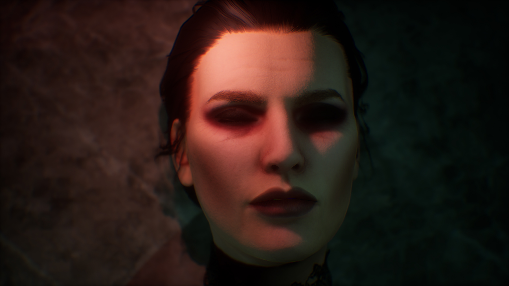
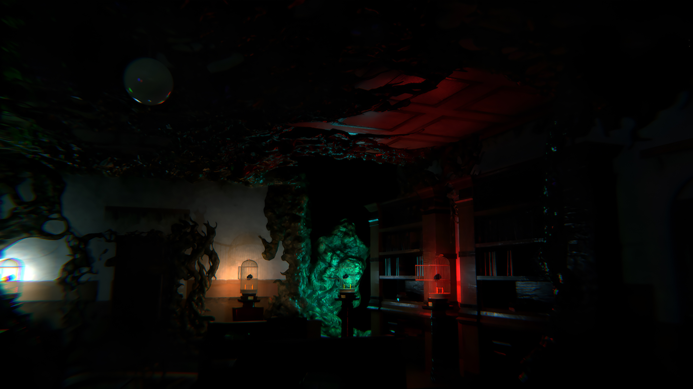
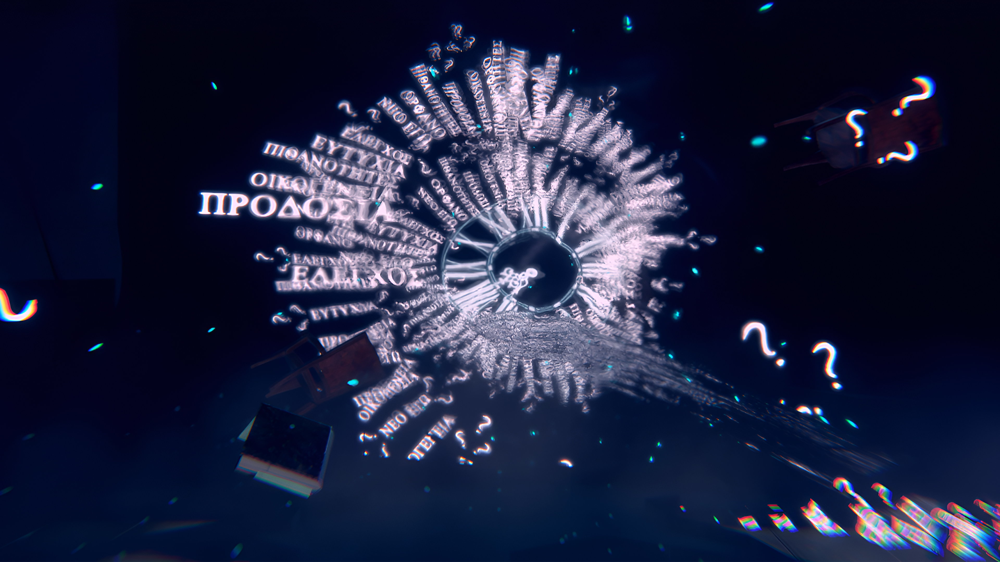
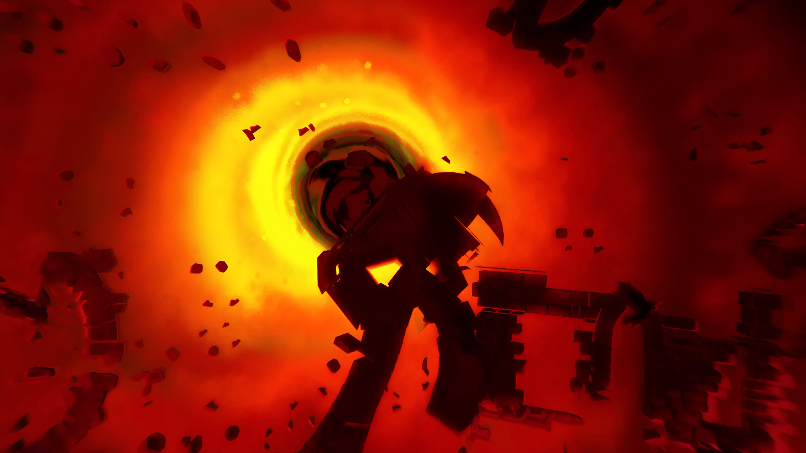

I am Dimitris, a Game Director, Motion and Game Designer, Writer, and Storyteller with over 4 years of experience. My passion lies in crafting experiences that truly immerse players in the worlds I create. Through my work, I strive to deliver unforgettable journeys that captivate and engage, allowing players to escape into new realities.
When I first began working on Thief's Shelter, my primary goal was to create a game that was more than just an interactive experience—it was about telling a story that players would genuinely want to engage with. From the very start, I knew that rich storytelling would be the cornerstone of the game.
I wanted to craft a narrative where every element of the game worked together to draw the player deeper into its world. This meant creating a story that wasn’t just layered and intricate but one that encouraged players to explore every nook and cranny, not because they had to, but because they wanted to. My vision was to develop a game where players wouldn’t simply skip through dialogue or rush past important plot points, but instead, they would find themselves eagerly engaging with the systems we built.
To achieve this, I took inspiration from the chill, thoughtful structure of point-and-click adventure games—titles where players take their time to uncover secrets, solve puzzles, and piece together the narrative. I wanted to translate that same sense of discovery into a 3D space, making it more immersive while still retaining that contemplative pace. The idea was to create a game that felt familiar to fans of adventure games but also offered something new by integrating modern elements and a fully interactive 3D environment.
In Thief's Shelter, the environment itself is the most dominant aspect of the experience. I designed it so that every decision to move in a certain direction carries weight. Whether it's a calculated move toward a waypoint, a moment of curiosity about whether a tool or piece of knowledge might help with the next discovery, or even a point of no return, every choice is deliberate and meaningful. This approach ensures that players are constantly thinking about their next move and how they might interact with the world around them.
I wanted players to feel a sense of agency in Thief's Shelter, to be active participants in the story rather than passive observers. This meant building systems that were not only engaging but also seamlessly integrated into the narrative. The choices players make—whether they decide to explore a dark corridor, use a key item in a novel way, or solve a complex puzzle—are all part of a larger story that unfolds based on their actions.
The challenge was to create a balance where the story and gameplay coexisted without one overshadowing the other. I believed that by focusing on the environment and the possibilities of how players could interact with it, we could create a game that felt both immersive and impactful. This approach meant that players would need to think carefully about their actions and how those actions could affect their journey. It wasn't just about reaching the end, but about the experience and decisions made along the way.
From the outset, my goal was to build a game that resonated on an emotional level, where every step taken felt significant, every discovery meaningful, and every choice loaded with consequence. Thief's Shelter was born out of a desire to bring players into a world where they could lose themselves in the story, feel the weight of their decisions, and ultimately, experience a game that stayed with them long after they put down the controller.
As development progressed, I remained committed to this vision. It was not just about creating a game, but about crafting an experience—a narrative journey that players would remember and cherish. And in doing so, I hoped to offer something that felt both fresh and familiar, a new take on storytelling in games that could captivate players from start to finish.
But my ambition for Thief's Shelter didn't stop at storytelling and immersive gameplay. I wanted to make the game accessible to a wider audience and bring back players that the genre once lost. To do this, we made several quality-of-life changes and incorporated accessibility features that ensure the game is welcoming and enjoyable for everyone. We looked closely at the frustrations and barriers that players might face, from the difficulty of certain puzzles to the need for more intuitive controls, and we made adjustments to provide a smoother, more engaging experience.
These enhancements aren't just about making the game easier; they're about ensuring that players of all skill levels can enjoy the rich narrative and intricate puzzles without feeling overwhelmed. We introduced scalable difficulty settings, improved visual aids for critical items and interactive elements, and even added customizable controls to accommodate different play styles and physical abilities. Our goal was to create a game that not only respects the traditions of the genre but also evolves with the needs of modern players.
Incorporating these changes has allowed Thief's Shelter to appeal to both new players and veterans of the adventure genre. It’s about creating a space where everyone feels comfortable exploring and engaging with the story. We believe that by making these thoughtful changes, we can help revitalize interest in the genre and show that adventure games can still offer deep, meaningful experiences.